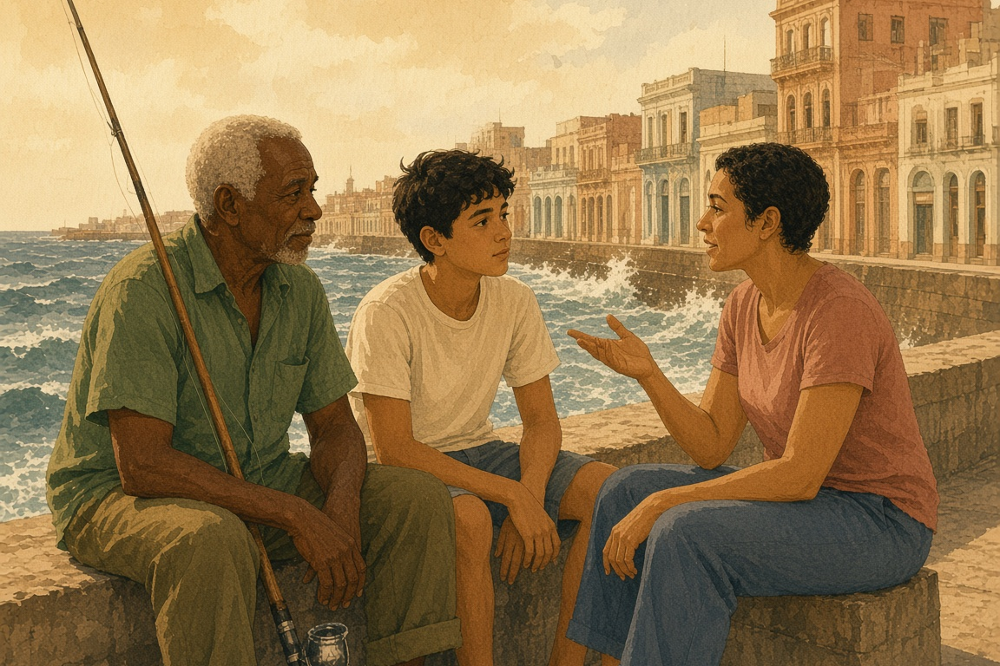
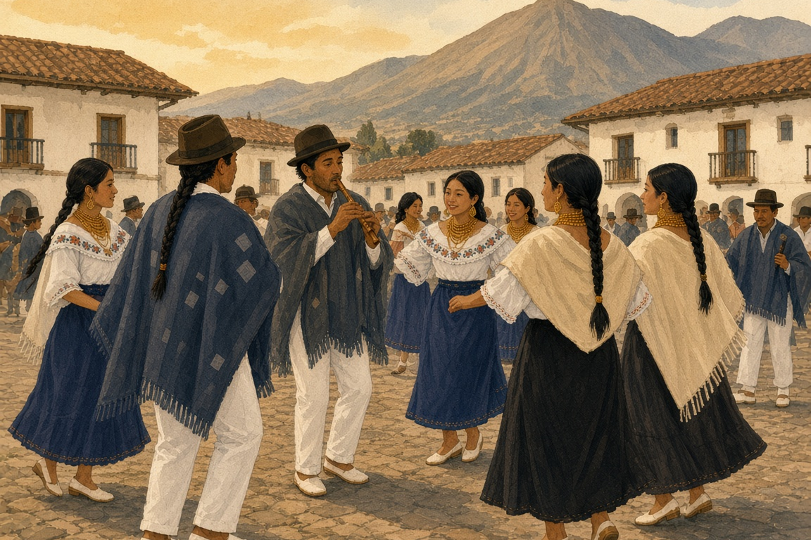

Historias cortas sobre costumbres del mundo hispano. Elige tu nivel y una lectura.
A1 Varios países
A1 Ecuador
A2 España
A2 México

A2 Cuba
B1 Colombia

B1 Ecuador
B1 Uruguay y Argentina
B2 España
B2 Ecuador, Andes y Guatemala
B2 Chile